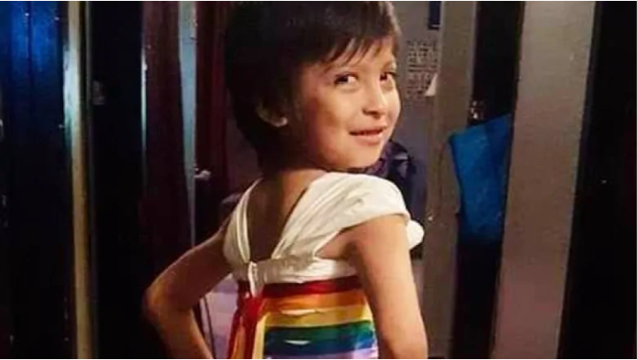
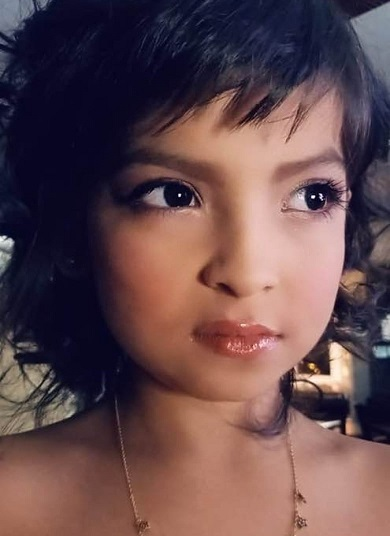
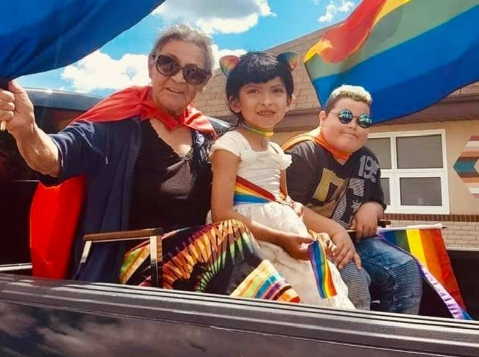
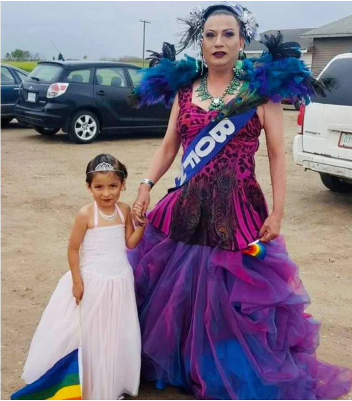
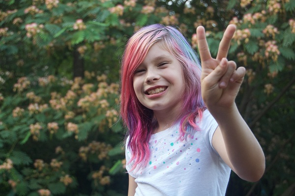

CBC Promotes Child Abuse - Reece Seeseequasis
February 24th, 2021
"Reece" Seeseequasis
CBC:
TDC_ARTICLE_START
Reece Okemaysim was only four years old when she told her mother that she wanted to be a girl.
Up until then, Reece, now nine, was raised as one of seven boys to their single mother, Rozanna Seeseequasis, in Beardy's and Okemasis Cree Nation in Saskatchewan.
"When she started coming out at four years old, she started playing with her auntie's purses and high heels and wanting makeup," said Seeseequasis.
"I didn't discourage her by saying, 'You can't play with that,'" she said.
TDC_ARTICLE_STOP
No I'm quite sure you encouraged HIM you fucking bitch. Everyone knows that young children, especially four year olds, will do whatever their parents tell them to do. And if they are disobeying their parents, it's because another authority figure in their life is telling them to. So fuck this bitch, this is child abuse, and she should be made an example of.
TDC_ARTICLE_START
Reece also made her own clothing choices.
"She decided just on her own to wear pink and she got to choose on her own what to wear," Seeseequasis said.
"I didn't discourage her by saying, 'You can't play with that,'" she said.
TDC_ARTICLE_STOP

No I'm quite sure you didn't. I am quite sure that you in fact encouraged him, you abusive mother. But more than that, I am quite sure that you didn't just leave this child up to his own devices, I think you actively tried to bully your little boy for upcummies from Perverts.
TDC_ARTICLE_START
"I did teach her about the ribbon skirt," which is traditionally worn to Indigenous ceremonies and represents strength and womanhood, she said. "Now she likes to wear ribbon skirts."
TDC_ARTICLE_STOP
DING DING DING! Confirmation bias is addicting isn't it?
The rest of this article is so bad it's almost unbelievable. First "Reece's" grandmother is extremely critical of this, recognizing that her grandchild is being abused by her mother, and other authority figures in her life. However, then there's this "oh but actually Abos were always super perverted," bullshit that they try to bring up, and this is apparently enough for her.
Granny can be seen with the abused Reece
TDC_ARTICLE_START
Reece also came very close to making her modelling debut in New York — but that was delayed by the COVID-19 pandemic.
Seeseequasis said she saw a call early last year for models for a two-spirit fashion show that was scheduled to happen in New York, organized by B.C. fashion designer Jill Setah.
"I asked if there was an age limit, because their previous shows had younger girls," said Seeseequasis. The designer asked to see a video of Reece walking.
"She saw it and she said, 'I want Reece. I need Reece.'"
TDC_ARTICLE_STOP

It's like I've entered a parallel dimension here. The above is "Reece" with "Miss Gay Lifetime," whatever that is. Apparently some guy named Giselle Gotti who is also from the "Beardy's and Okemasis First Nation". Also, my brain got kind of fried looking at this, so I forgot to mention "her" modelling career, where the organizers are really interested in very young Aboriginal girls.
TDC_ARTICLE_START
"As a fellow queer kid, thank you for supporting and loving Reece," said Shayla Jilleen Sayer-Brabant from Regina.
"I love all the supportive moms," said Seeseequasis. "It just made me cry."
Seeseequasis said some mothers her age are not as supportive of their children.
"I didn't want to do that to my baby," she said.
"When she's sitting with me, she says, 'Oh, I just love you, mom. I want to be a mom just like you.'"
Seeseequasis said that as a young person she was often judged and told that she could not do certain things.
"I want my kids to feel like nothing can stand in their way, and they can be whatever they want — and just be who they want."
TDC_ARTICLE_STOP

Well Reece will never ever be a mother, because he is biologically incapable of that. It doesn't matter how many CBC Propaganda Pieces are written. It doesn't matter how much fraudulent pseudo-science they trot out. It doesn't matter how many anti-Child Abuse Advocates are censored or even jailed for trying to stop this. It doesn't matter how many upcummies this cunt mother gets online. Reece will never give birth. He has a penis.
Weirdly enough, comments were closed on this article.